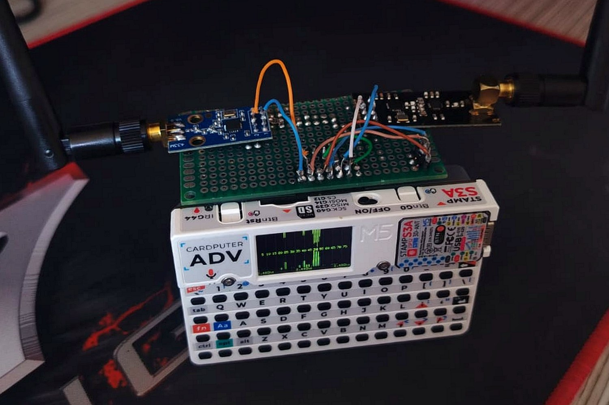

Cardputer ADV as an RF multi-tool: CC1101 + nRF24L01+
An M5Stack Cardputer ADV, a perfboard and two radios: the CC1101 for sub-GHz (433/868/915 MHz) and the nRF24L01+ PA/LNA for 2.4 GHz. Both on the same SPI bus, switched in software, inside a device that fits in a pocket and has a keyboard and a screen. The goal: a bench platform to study RF without leaning on an SDR plugged into the laptop.

A bench project, on my own equipment, for testing in authorized environments and academic use.
1. What it is and why
The Cardputer is M5Stack's pocket computer: an ESP32-S3, a QWERTY keyboard, a screen and a battery, all the size of a card. On its own it already runs open firmware, but it has no radio beyond the Wi-Fi and Bluetooth of the S3 itself. The point of this project was to give it two research radios in a single accessory: sub-GHz and 2.4 GHz, covering much of the spectrum where remotes, sensors, toys, peripherals and cheap IoT live.
The CC1101 is the classic sub-GHz transceiver: it works at 433, 868 and 915 MHz, the ISM bands where most gate remotes, sensors and low-cost telemetry sit. The nRF24L01+ PA/LNA covers 2.4 GHz, with a power amplifier and a low-noise amplifier for range, and serves both the chip's own protocols and spectrum activity scanning. Together, in a device with a keyboard and a screen, they become a portable RF bench.
2. The build
Both modules live on a perfboard that plugs into the EXT 2.54-14P expansion connector of the Cardputer ADV (the one with the Stamp-S3A / ESP32-S3FN8). Three decisions drove the build: power, the SPI bus, and remapping pins in firmware.
Power: 3.3 V, and only 3.3 V
This is the detail that keeps the board from frying. The EXT connector delivers 5 V on pin 6, but the ESP32-S3 does not tolerate 5 V on any GPIO. So the 5 V goes through a V987 Mini buck-boost DC-DC converter on the board, with its output set to 3.3 V, and both radios are fed only with 3.3 V. The logic signals are already 3.3 V on both sides, so no level shifter is needed. Swapping 5 V for a GPIO would damage the Stamp-S3A: check your connector pinout against the official documentation before powering it up.
Shared SPI bus
Both radios share the same three SPI lines: SCK=G40, MOSI=G14,
MISO=G39. Each one has its own chip-select, so both stay wired at the same time and
selection is done in software: no jumper, no reset, you just address one or the other. These are
the same lines as the Cardputer's microSD (CS_SD=G12), which works fine as long as
the wires stay short. The full pinout:
SPI bus (shared with the microSD, CS_SD = G12)
SCK = G40 MOSI = G14 MISO = G39
CC1101 (sub-GHz 433 / 868 / 915 MHz)
CSN = G13 GDO0 = G5
nRF24L01+ PA/LNA (2.4 GHz)
CSN = G6 CE = G4
Reserved: do NOT use G8 / G9 (internal I2C: keyboard, IMU, audio)
G8/G9 are off the table on purpose: they are the Cardputer's internal I2C, where the
keyboard, the IMU and the audio live. Taking over that bus breaks all three at once.
The full schematic (Rev. B) has the drawing, the point-to-point wiring table and the bench verification checklist, everything you need to reproduce the board: download the schematic (PDF).
Remapping in Bruce firmware
The firmware running the rig is Bruce, an open-source firmware for ESP32 devices aimed at offensive security and RF experimentation. It already ships drivers for the CC1101 and the nRF24, sub-GHz and 2.4 GHz menus, the spectrum analyzer you see on screen in the photo above, plus Wi-Fi, Bluetooth, infrared and RFID modules. It is what turns the hardware into a usable tool without writing code: you pick radio, band and function straight from the keyboard.
The detail that makes it all work: the default Cardputer build points both radios at the
same pins (cs=1, io0=2). Without reassigning them, the
two modules will not operate wired at the same time. The remap lives in the
/brucePins.conf file, keyed by the device's Wi-Fi MAC:
{
"AA:BB:CC:DD:EE:FF": {
"CC1101_Pins": { "sck": 40, "miso": 39, "mosi": 14, "cs": 13, "io0": 5, "io2": -1 },
"NRF24_Pins": { "sck": 40, "miso": 39, "mosi": 14, "cs": 6, "io0": 4, "io2": -1 }
}
}
sck/miso/mosi are already the Cardputer family default, so in practice only
cs and io0 change. io0 carries a different signal on each
chip: it is GDO0 on the CC1101 and CE on the nRF24. io2
stays at -1, unused here. The file exists in LittleFS and also on the SD card, and
Bruce reads the SD copy when a card is mounted: edit the right one and reboot.
RF and power gotchas
- nRF24 PA/LNA current spikes: it pulls peaks of about 115 mA on
TX. Keep the 3.3 V wire to it short; if you see instability or short range, a
10 uFcap on VCC/GND fixes it. - Desensitization: keep the two antennas apart from each other and from the Cardputer body. Antennas touching or stacked, or sitting next to the device's metal and electronics, drop the receiver's sensitivity.
- Short SPI wires: since the lines are shared with the microSD, a long wire or a bad joint shows up as a card that will not mount or a radio that will not answer.
3. Applications
With both radios on air, the device turns into a versatile study bench:
- 2.4 GHz spectrum analysis: sweep the channels and watch band activity, which is what shows up on the screen in the photo above. Useful for reading Wi-Fi, Bluetooth and peripheral occupancy.
- Sub-GHz protocol study: observe and characterize signals at 433 MHz, the band most crowded with low-cost remotes and sensors.
- RF and IoT security research: a cheap platform to understand how these radios behave, always on your own equipment.
- Hardware CTFs: challenges involving RF, SPI and embedded firmware fit nicely in a pocket device with a keyboard and a screen.
4. Why the Cardputer
The appeal of using the Cardputer as a base is the sum of things that are usually scattered around: an ESP32-S3 with headroom in processing and memory, a physical keyboard for typing commands and frequencies, a screen to see the spectrum in real time, a battery, and the open-source Bruce firmware tying it all together. All of it in a card-sized form factor that fits in a pocket and needs no laptop next to it. The board is the only part you build, and it is reversible: pull it off the EXT and the Cardputer is back to stock.
5. Responsible use
This is a research and study project, built for testing in authorized environments and academic use, always on my own equipment. Operating on someone else's signals and systems without authorization is not just bad practice: it is illegal. The RX side (listening, analyzing the spectrum, characterizing your own signal) is the study ground; the TX side calls for extra care.
References and credits
- M5Stack Cardputer-Adv, official documentation (EXT pinout, PinMap and schematics)
- pingequalab/cardputer-adv-cc1101-nrf24-auto-switch (MIT / CC BY-SA 4.0), shared-SPI mapping and the
brucePins.conf - BruceDevices/firmware, the firmware and the wiki